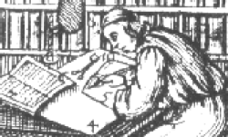

 The Text Encoding Initiative (TEI) Guidelines are an international and interdisciplinary standard that facilitates libraries, museums, publishers, and individual scholars represent a variety of literary and linguistic texts for online research, teaching, and preservation.
The TEI standard is maintained by a Consortium of leading Institutions and Projects worldwide. Information on projects which use the TEI, who is a member, and how to join, can all be found via the links above. Consortium members contribute to its financial stability and elect members to its Council and Board.
The Guidelines are the chief deliverable of the TEI Consortium, along with a range of tutorials, case studies, presentations, and software developed for or adapted to the TEI. The latest release of the Guidelines under development is P5.
The TEI was originally sponsored by the Association of Computers in the Humanities (ACH), the Association for Computational Linguistics (ACL), and the Association of Literary and Linguistic Computing (ALLC). Major support has been received from the U.S. National Endowment for the Humanities (NEH), the European Community, the Mellon Foundation, and the Social Science and Humanities Research Council of Canada.
Want to become active in the TEI Community? Join a Special Interest Group, sign up for the mailing list, and come to our annual meetings.